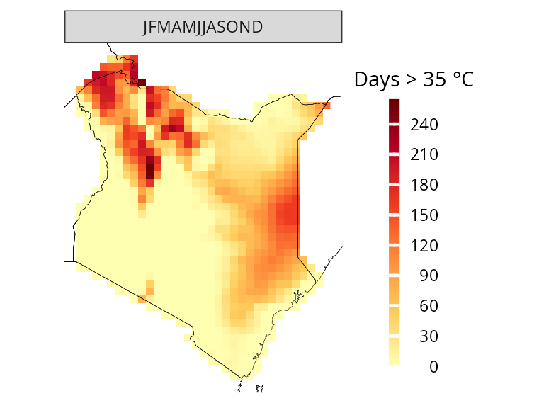
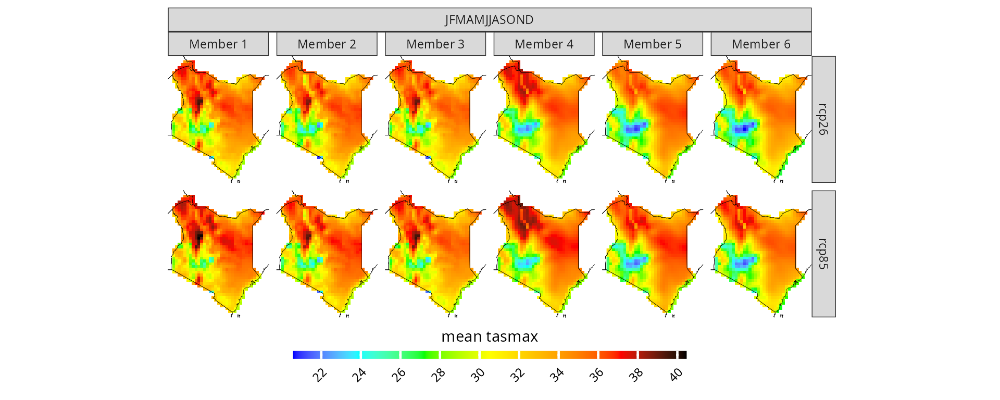
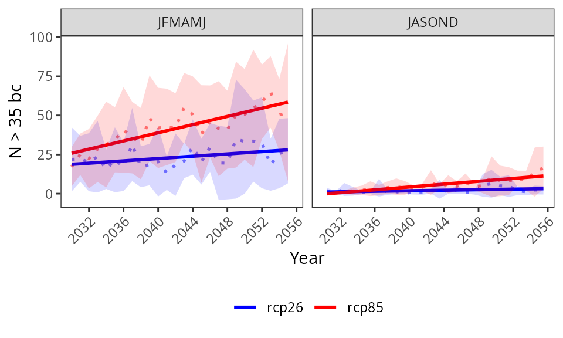
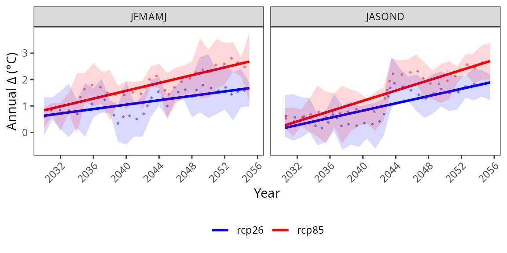

More about CAVAanalytics
Introduction.Rmdlibrary(CAVAanalytics)The main purpose of CAVAanalytics is making the processing and visualization of multiple climate models simple. Additionally, CAVAanalytics offers an access point to download CORDEX-CORE climate models, the high resolution (25 Km) dinamically-downscaled climate models used in the IPCC report AR5. CAVAanalytics also offers access to state-of-the-art reanalyses datasets, such as W5E5 and ERA5.
CAVAanalytics is built on top of climate4R and several tidyverse packages. The current available data that can be downloaded using the package are:
- CORDEX-CORE simulations (3 GCMs donwscaled with 2 RCMs for two RCPs)
- W5E5 and ERA5 reanalyses datasets
Available variables are:
- Daily maximum temperature (tasmax)
- Daily minimum temperature (tasmin)
- Daily mean temperature (tas)
- Daily precipitation (pr)
- Daily relative humidity (hurs)
- Daily wind speed (sfcWind)
- Daily solar radiation (rsds)
Loading CORDEX-CORE data
Below we are automatically downloading all CORDEX-CORE simulations
alongside the observational dataset ERA5 for Kenya. As you can see, it
is extremely simple. We will see how to work with locally available
models in another vignette.
Note that this process can take a while, depending on the size
of the country and the number of years specified
# to download a specific area, set country=NULL and specify xlim and ylim arguments.
kenya_exmp <- load_data(path.to.data = "CORDEX-CORE", country = "Kenya", variable = "tasmax",
years.proj = 2030:2055, years.hist = 1980:2005, domain = "AFR-22", path.to.obs = "ERA5")You can explore the output using attributes(kenya_exmp).
# the main output of the loading function is a tibble with list column containing all the downloaded data
class(kenya_exmp[[1]])
#> [1] "tbl_df" "tbl" "data.frame"
colnames(kenya_exmp[[1]])
#> [1] "experiment" "models_mbrs" "obs"
kenya_exmp[[1]]$experiment
#> [1] "historical" "rcp26" "rcp85"
# the column models_mbrs stands for model members. The structure of this element comes from the loadeR package. The data is contained in the data element, and as you can see, it has 6 members. CAVAanalytics automatically binds together multiple models and checks for temporal consistency.
dim(kenya_exmp[[1]]$models_mbrs[[1]]$Data)
#> [1] 6 9278 42 33When uploading CORDEX-CORE data it is important to understand the concept of CORDEX domains. The domain argument in load_data needs to be correctly specified. Below is an example of the available CORDEX domains.

Observations
We can examine historical data using the loaded observational dataset, which, in this case, is ERA5. In this case, we are looking at the mean historical maximum temperature for the whole year.
kenya_obs <- observations(kenya_exmp, season=list(1:12))
plotting(kenya_obs, plot_titles = "Mean tasmax") If you want, you can also use pre-defined IPCC color palettes. You can
type ?IPCC_palette for more info
If you want, you can also use pre-defined IPCC color palettes. You can
type ?IPCC_palette for more info
plotting(kenya_obs, plot_titles = "Mean tasmax",
palette = IPCC_palette(type = "tmp", divergent = F))
How many days above 35 °C occurred on average?
kenya_obs.35 <- observations(kenya_exmp, season=list(1:12), uppert=35)
plotting(kenya_obs.35, plot_titles = "N.days > 35")
You can also specify more than one season at a time
kenya_obs.35 <- observations(kenya_exmp, season=list(1:6, 7:12), uppert=35)
plotting(kenya_obs.35, plot_titles = "N.days > 35")
Model biases
Before diving into the analyses of climate model projections, it is essential to examine model biases. Defining biases can be somewhat arbitrary as it depends on the specific and intended usage of climate models. However, CAVAanalytics offers a flexible and straightforward approach to conducting this analysis. Let’s begin by exploring the differences in mean climatology between the CORDEX-CORE historical experiments and ERA5.
# you can specify the season. In this case we are looking at the whole year
biases_kenya <- model_biases(kenya_exmp, season=list(1:12))
plotting(biases_kenya, ensemble=F,
trends=F, plot_titles = "mean tasmax biases", palette = IPCC_palette(type="tmp", divergent = T))
plotting(biases_kenya, ensemble=F, trends=T,
plot_titles = "mean tasmax biases")+ggplot2::ggtitle("Before bias correction") As we can see, the biases are mainly positive, hence CORDEX-CORE models
are warmer than the “observed” data. However, what happens if we bias
correct the data? The results look much better now and mean biases are
reduced thanks to bias correction.
As we can see, the biases are mainly positive, hence CORDEX-CORE models
are warmer than the “observed” data. However, what happens if we bias
correct the data? The results look much better now and mean biases are
reduced thanks to bias correction.
biases_kenya.bs <- model_biases(kenya_exmp, season=list(1:12), bias.correction = T)
plotting(biases_kenya.bs, ensemble=F, trends=T, plot_titles = "mean tasmax biases")+ggplot2::ggtitle("After bias correction")
Projections
Now that we looked at model biases, we can start exploring future projections. For example, what if you want to have a look at what will be the projected maximum temperature in Kenya for the 2030-2055 time period? Let’s remember that these models have positive biases though.
# you can specify the season. In this case we are looking at the whole year
proj_kenya <- projections(kenya_exmp, season=list(1:12))
# stat can take either mean or sd. It is used in combination with ensemble=T. Default is always mean
plotting(proj_kenya, ensemble=T, stat="mean", plot_titles = "mean tasmax")
plotting(proj_kenya, ensemble=F, stat="mean", plot_titles = "mean tasmax")
In certain cases, focusing solely on mean temperatures might not provide the insights we need. Instead, we might be interested in understanding the frequency of specific conditions projected to occur. For instance, we may want to determine the number of days with maximum temperatures above 35 °C.
proj_kenya_35 <- projections(kenya_exmp, season=list(1:6, 7:12), uppert=35)
plotting(proj_kenya_35, ensemble=T,
plot_titles = "N > 35", palette=c("white", "orange", "red", "darkred"))
When dealing with model biases, CAVAanalytics offers a straightforward solution by automatically implementing bias correction using the empirical quantile mapping method. This process allows us to correct for discrepancies between observed data and model outputs.
# bias correction is applied with the widely used empirical quantile method
proj_kenya_35bc <- projections(kenya_exmp, season=list(1:6, 7:12), bias.correction = T, uppert=35)
plotting(proj_kenya_35bc, ensemble=T,
plot_titles = "N > 35 bc",
palette=c("white", "orange", "red", "darkred"), legend_range = c(0, 320))
Climate change signal
While analyzing future periods can be beneficial, there are instances where we prioritize understanding delta changes, which represent the relative increase or decrease in mean maximum temperatures compared to a baseline. CAVAanalytics facilitates this analysis as well.
ccs_kenya <- climate_change_signal(kenya_exmp, season=list(1:12))
plotting(ccs_kenya, ensemble=F, plot_titles = "Mean tasmax change",
legend_range = c(-3, 3),
palette = c("blue", "cyan", "green", "white", "yellow" ,"orange", "red"))
Trends
While examining delta changes and absolute values for projections provides valuable information, it may not offer insights into temporal trends. However, using the ‘trends’ function in CAVAanalytics allows us to address this limitation. For instance, we can determine if Kenya has experienced or is projected to experience a noteworthy rise in yearly maximum temperatures.
# the observation argument allows us to study trends for the future or for the past. Note that for observation = T, we need to have specified path.to.obs because this option does not work with the historical experiment of climate models but with observation
trd_kenya.obs <- trends(kenya_exmp, season=list(1:12),observation = T)
plotting(trd_kenya.obs, plot_titles = "°C/year", frequencies = F, spatial_aggr = F)
We can look at trend for the future period as well by changing the observation argument to FALSE
trd_kenya.prj <- trends(kenya_exmp, season=list(1:12),observation = F)
plotting(trd_kenya.prj, ensemble=F,
plot_titles = "°C/year", frequencies = F, spatial_aggr = F)
Another feature of the trends function is that you can look at the global significance of the ensemble. The plot below shows you the number of models that agrees in a certain change (increase or decrease) while the global p.value is calculated based on the manylm function of mvabund.
plotting(trd_kenya.prj, ensemble=T,
plot_titles = "N. memb",
frequencies = F, spatial_aggr = F, palette = c("blue", "green", "white", "yellow", "red"))
While we can visualize the results spatially, we can also look at temporal trends. In this case, a general additive model using a cubic regression spline is applied to better capture non-linear patterns.
plotting(trd_kenya.prj, ensemble=T,
plot_titles = "°C", spatial_aggr = T, frequencies = F)
In addition to performing spatial averages and visualizing trends, we can gain valuable insights by examining the distribution of annual mean tasmax (maximum temperature) across Kenya using the specified frequencies, denoted as ‘TRUE.’ This approach is particularly valuable because many analyses tend to aggregate data either spatially or temporally, potentially obscuring certain patterns. By utilizing the ‘frequencies=T’ option, we ensure a comprehensive understanding of both spatial and temporal attributes, allowing us to uncover hidden patterns in the data.”
plotting(trd_kenya.prj, ensemble=T, spatial_aggr = F, plot_titles = "°C",
frequencies = T, n.groups = 2,palette=c("blue","red"))